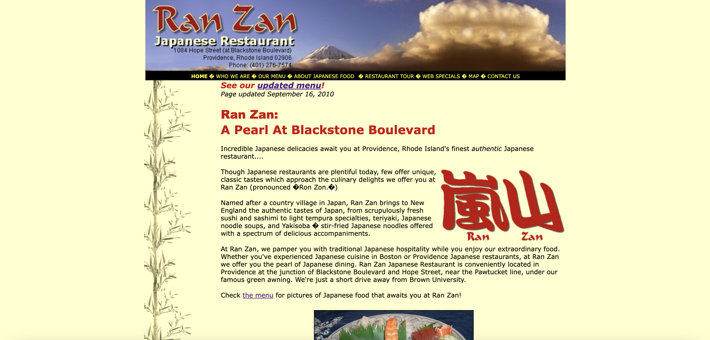
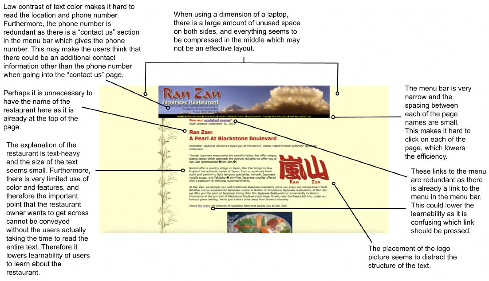
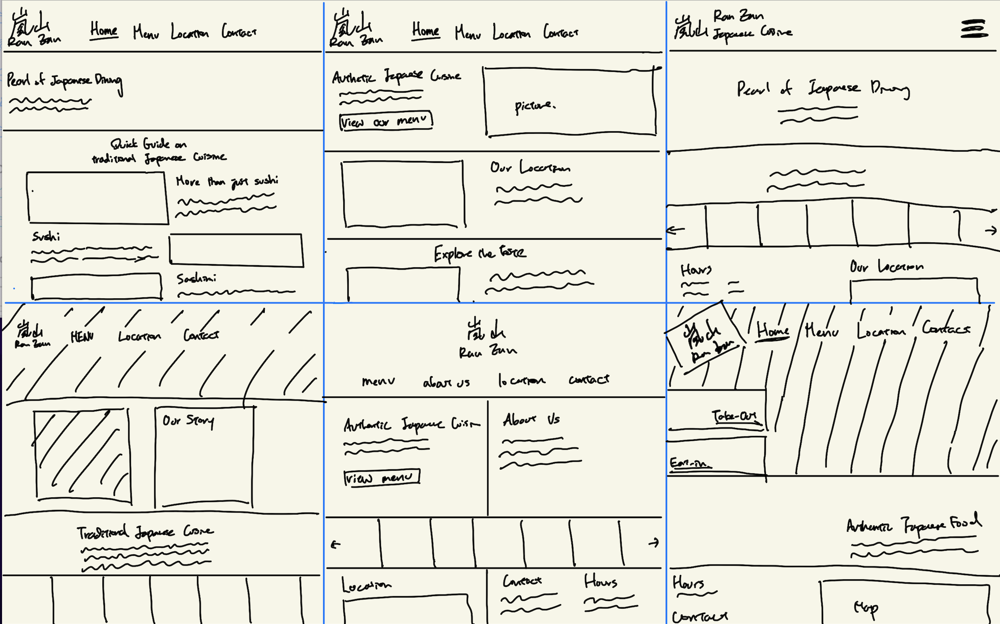
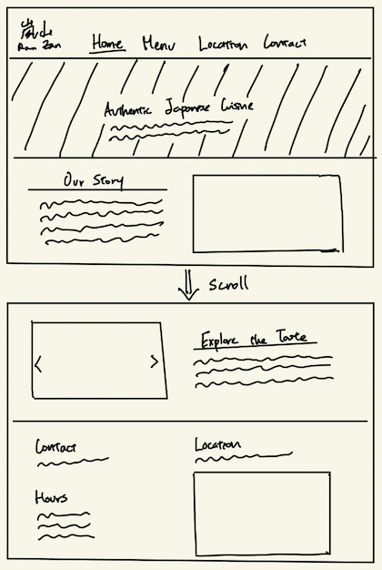

The purpose of this assignment was to practice the workflow of redesigning a simple website. An existing interface was analyzed and was redesigned to improve the usability and accessibility. The sketch of the redeisgn, low-fidelty wireframes, high-fidelty mockups, and the final redesigned website is included in this webpage.
Part 1: Identifying Usability Problems
Picking a Website
A website of a restaurant called Ran Zan was chosen for the assignment.
This is a website of a Japanese restaurant located in Providence, serving as a platform to offer an introduction to the restaurant while also presenting the menu and contact details for user convenience. I chose this website to redesign because the website seemed outdated and it was evident that redesigning it would significantly improve its user-friendliness.
Analysis of Usability and Accessibility
Usability of Website
The analysis of the website usability can be seen in this diagram below.
Accessibility of Website
The accessibility of the website was analyzed using WebAIM WAVE. Using WebAim WAVE, 2 errors and 37 alerts were given for this webpage. The 2 errors (spacing image missing alternative text, language missing or invalid) are in the coding of the webpage, and while the error is not visible on the webpage, it should be fixed. Furthermore, of the 37 alerts, 29 were due to small text size, which I agree with. The text size in the menu bar should be increased to higher readability. In addition, 2 of the alerts were due to redundant links to the home page. I think that the home page link in the menu bar could still be kept, but additional features like an underline could be added to the link name to indicate that the user is currently on that page. Other alerts included “no heading structure”, “no page regions”, and “layout tables”. These alerts are due to the way the webpage was coded, and should be fixed when redesigning the webpage.
Part 2: Visual Redesign
Speed Sketching
Nine sketches of possible redesign are shown below.
Final Sketch
A final sketch that incorporates the favorable design elements from the speed sketches were made.
Low-Fidelity Wireframing
Using the final sketch as a reference, one wireframe for each screen size (mobile, tablet, and desktop) was created using Figma.
The low-fi wireframe for the desktop screen size can be accessed here.
The low-fi wireframe for the tablet screen size can be accessed here.
The low-fi wireframe for the mobile screen size can be accessed here.
The annotation for these low-fi wireframes are shown below.
Visual Design Style Guide
Before creating the high-fidelty prototype, a visual design style guide that displays the main colors, typography, and reusable components’ different states was made using Figma.

High-Fidelity Mockup
Using the low-fidelity wireframes and the visual style guide, three high-fidelity mockups of the page were made with one for each of the screen sizes (mobile, tablet, desktop).
The high-fi mockup for the desktop screen size can be accessed here.
The high-fi mockup for the tablet screen size can be accessed here.
The high-fi mockup for the mobile screen size can be accessed here.
Part 3: Responsive Redesign
Using the final high-fidelity prototypes, the page was created using HTML and CSS.
The redesigned website can be accessed here.The image below shows a visualization of the redesigned website with a desktop scren size.
The zip file of html and css codes for the redesigned website can be downloaded here.